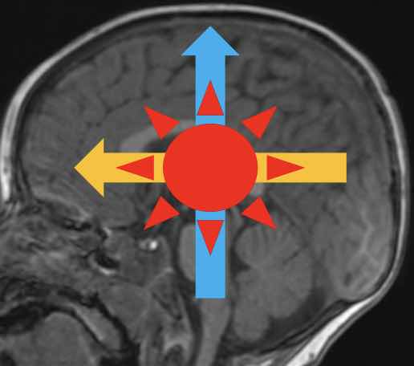

Neuropédiatrie
 craniosténose = fermeture prématurée d'une suture (Vinchon)
craniosténose = fermeture prématurée d'une suture (Vinchon)

Séquences axiale FLAIR, 3D T1 EG, sagittale T2 centrée sur la ligne médiane.
Examen réalisé sous anesthésie générale par le Docteur .
Fosse postérieure :
Pas d'anomalie de la morphologie ni du signal du tronc cérébral.
Cervelet et en particulier vermis de taille et morphologie normales.
Quatrième ventricule de volume et de topographie normales.
Intégritér des angles ponto-cérébelleux et des citernes de la base.
Etage supra-tentoriel :
Pas d'anomalie de la gyration ni de la migration neuronale.
Hypersignal FLAIR symétrique de la substance blanche péri-trigonale en rapport avec des zones de myélinisation terminales, d'aspect banal.
Intégrité des noyaux gris centraux et des structures de la ligne médiane.
Corps calleux complet, de taille normale.
Trophicité cérébrale respectée.
Pas de séquelle hémorragique.
Myélinisation de la substance blanche = atlas 
- NNé = fini en sous-tentoriel, puis bas → haut, arr → avt, centre → périph
- hyperT1 commençant aux bras post. des capsules internes, terminé à M6
- hypoT2 sus-tentoriel d'apparition très progressive jusqu'à 2-4 ans
- FLAIR retardé : pas de myélinisation sus-tentoriel avant 1 an
- leucodystrophies = anomalies de la myélinisation

Spectroscopie monovoxel à TE long sur les noyaux gris centraux.

DD macrocéphalie
- < M6 (ETF ± IRM) = HSD, hydrocéphalie, tumeur
- > M6 (IRM) = épanchement péricérébral +++, sténose foramens jugulaires, et autres
Sur une IRM 3 Tesla, séquences 3D T1 EG, 3D FLAIR, SWI, coronale T2 centrée sur les hippocampes.
Pas d'anomalie de la gyration, de la migration neuronale ni de la myélinisation.
Aspect sans particularité du signal et de la trophicité des hippocampes.
Hypersignaux FLAIR symétriques dans la substance blanche péri-trigonale en rapport avec des zones de myélinisation terminales, d'aspect banal.
Intégrité des noyaux gris centraux et des structures de la ligne médiane.
Pas de lésion hémorragique ni de calcification anormale.
Corps calleux complet, de volume normal.
Trophicité cérébrale respectée.
Pas de processus expansif.
‚↠apyr√©tique, iono normal, hors suspi d'AVC => TDMüö® (h√©matome, tumeur, TVC, abc√®s ?!)
Causes = dysplasie/hétérotopie > anoxo-ischémie > trauma > tumeurs > cavenormes, MAV
/!\ myélinisation M3 - 3 ans => IRM avant ou après pour chercher une dysplasie corticale
épilepsie temporale pharmaco-résistante => sclérose mésiale hippocampique
- tb csc ± fièvre ± crises comitiales ± signes de localisation
- toute suspicion = zovirax IV (sinon 80% †)
- insula (90%) > thalamus (60%) > temporal (50%)
Tumeurs (gado systématique au 1er bilan si anomalie !)
- DNET = sur dysplasie corticale dans 80%, hypoT1 hyperT2 "bubbly"
- MVNT = DD DNET, bubbly sous-cortical, chez l'adulte jeune ou d'âge moyen
- gangliogliome = DD DNET avec PDC, pas bubbly, ± calcification et kyste
- hamartome plancher V3 = crises gélastiques + puberté précoce + retard intellectuel
- hydrocéphalie active = dilatation ventriculaire + résorption transépendymaire
- plan sagittale T2 = abaissement du plancher du V3 => ventriculocisterostomie
- médulloblastome = lésion médiane hyperdense /!\ métas spinales
- astrocytome pylocytique = nodulokystique avec PDC marquée = bénin
- gliome du tronc cérébral = élargissement hypodense de la protubérance
- épendymome = hétérogène, calcifications, extension angles ponto-cérébelleux
- adulte = métastase / hémangioblastome (nodulokystique, VHL)
TC accidentel
- exam neuro normal = pas d'imagerie (surveillance 6h aux urgences)
- signes neuros (mydriase) = HED/HSD/HIP, HSA (an√©vrysme ?! ++++) = neurochir üö®
- Coma + TDM normale = IRM (lésions axonales diffuses, corps calleux, dissection TSA)
- Suspicion de brèche de la dure-mère = IRM avec T2 FS
TC non accidentel (maltraitance) = 30% †
- /!\ fractures linéaires axiales et fractures enfoncements
- HSD par rupture des veines en pont, 80% bilatéral, PAS DE DATATION
- HSA (50% des cas) chercher anévrysme ++++, HIP et pétéchies (IRM)
- lésions anoxo-ischémiques = œdème (dédifférenciation SB-SG, cervelet blanc)
- IRM J2-3 avec sag STIR cervicale = lésions musculaires liées au secouement ?